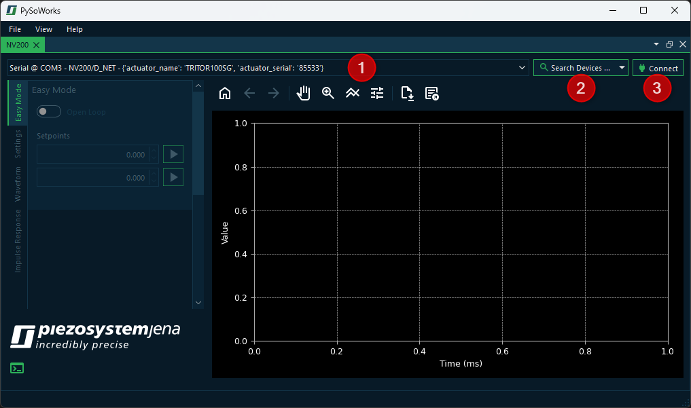
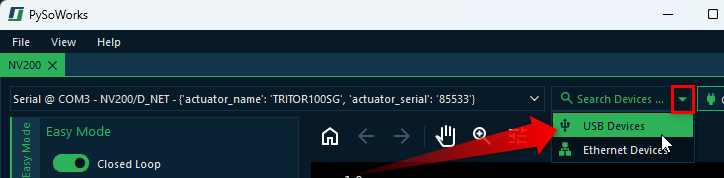
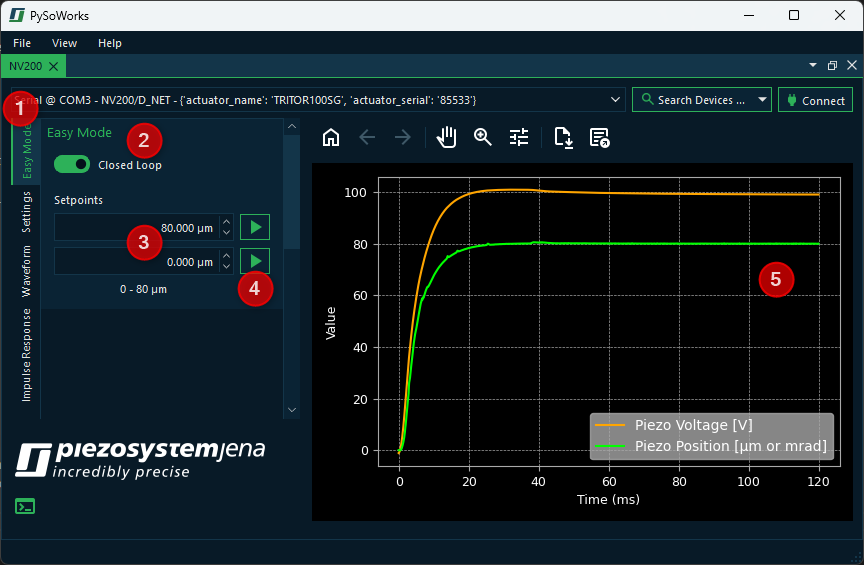

1. Getting Started
1.1. Quick Start
Before starting the software, your NV200 should be connected to the PC and powered on. Follow these steps:
Connect your piezo actuator to the NV200
Connect the NV200 to your PC via USB
Connect the power supply to the NV200 to switch the device on
Now you can start the PiSoWorks application. Right after the start, you should see the following screen:
The device list ❶ shows all detected NV200 devices connected via USB. If you have multiple devices connected, you can select the one you want to control. If your device is connected via Ethernet, you must click the Search Devices button ❷, as the initial scan only searches for USB devices. Once you have selected your device in the device list, click the Connect button ❸.
1.2. Device Search
The software supports device discovery, allowing users to easily find and connect to compatible devices. The software can search for devices connected via USB or Ethernet. While searching for USB devices is fast and is done automatically on startup, Ethernet device discovery may take longer and requires the user to click the Search Devices button ❷ in the UI.
If you just click the button, then the software will search for all devices connected via USB or Ethernet. If you want to search for device connected to a specific interface, you can select the desired interface from the dropdown menu next to the button. Just click the small arrow on the right side of the button to expand the menu and choose the interface you want to use for the search.
Tip
Searching for USB devices is a lot faster than searching for Ethernet devices, so if you know your device is connected via USB, it’s best to search only for USB devices.
2. Easy Mode
2.1. Setpoint Control
Immediately after connecting, you will be in the Easy Mode panel ❶. Here, you can manually move your piezo actuator by specifying a target voltage (open loop) or a target position (closed loop). This means you first need to decide whether you want to operate in closed loop or in open loop mode using the toggle switch ❷.
Afterwards, you can enter the target position or target voltage in the setpoint input fields ❸. The movement to a setpoint is initiated by clicking the corresponding start button ❹. With the two available input fields, the actuator can be conveniently moved between two positions or voltage values.
The plot ❺ displays the measured voltage and position of the piezo actuator for the most recent movement. The x-axis typically represents time in ms, while the y-axis shows the corresponding actuator position or applied voltage.
2.2. Plot Interaction and Data Export
Users can interact with the plot using the toolbar to zoom in on specific regions, pan across the data, or reset the view to its original state. In addition, the data displayed in the plot can be exported in Excel or CSV format for further analysis or documentation. This provides a convenient way to visualize and process the actuator’s behavior during operation.
The following tools are available for plot interaction:
Button |
Function / Action |
Detailed Description / User Instructions |
|---|---|---|
Resets the plot view. |
Returns the plot to its original view. Use this to undo any zoom or pan operations. |
|
Step back in navigation history. |
Moves back to the previous view in the navigation history. Useful if you want to revert a recent zoom or pan. |
|
Step forward in navigation history. |
Moves forward to the next view in the navigation history. Works only after using “Back”. |
|
Activate pan mode. |
Click the button to enable panning. Then click and drag on the plot to move it horizontally or vertically. Click the button again to deactivate pan mode. |
|
Activate zoom mode. |
Click the button to enable zooming. Then click and drag a rectangular area to zoom in. Click the button again to deactivate zoom mode. |
|
Adjust layout. |
Opens a dialog where you can change plot line colors, margins, and axis settings. This allows fine-tuning of plot appearance before saving or printing. |
|
Save plot as an image file. |
Opens a file dialog to save the plot in various formats (PNG, PDF, SVG, etc.). Choose the location and file type, then confirm to export. |
|
Export data to Excel or CSV |
Opens a file dialog to export the plot`s underlying data. Choose the location, filename, and format (Excel .xlsx or CSV). Click “Save” to export the data for further analysis or reporting. |
{kind=link}
{kind=link}
{kind=link}
{kind=link}
{kind=link}
{kind=link}
{kind=link}
{kind=link}